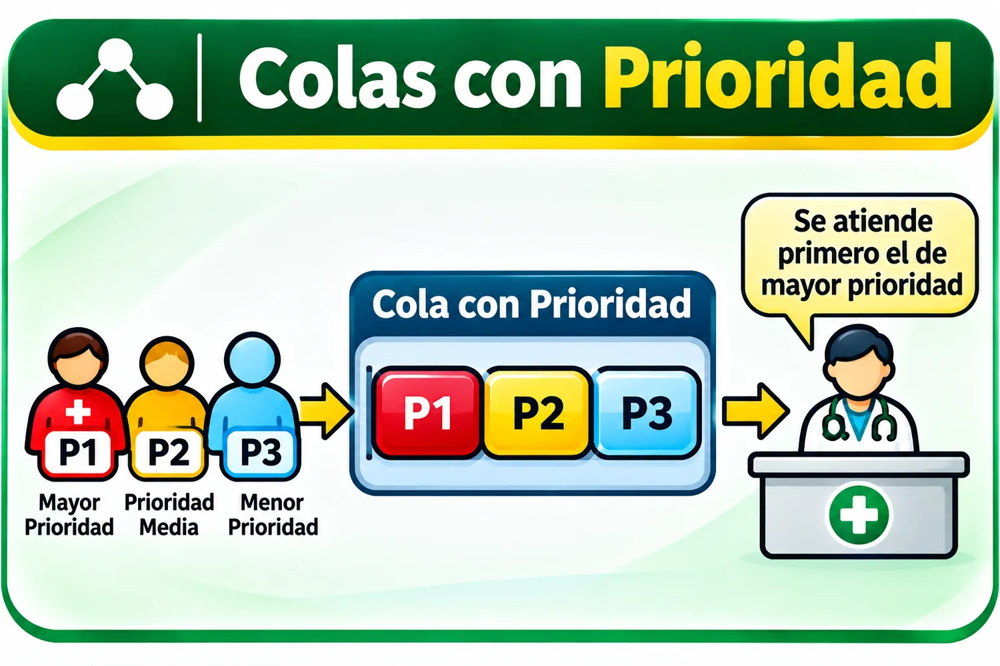
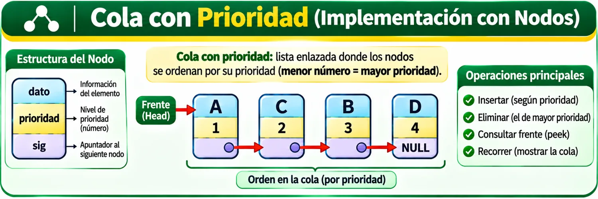
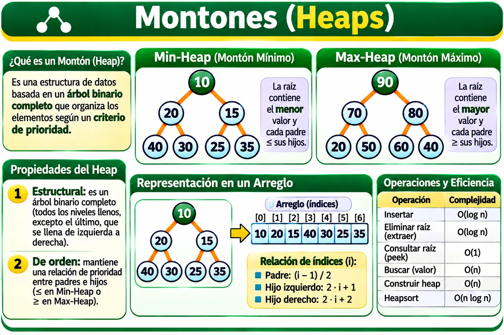
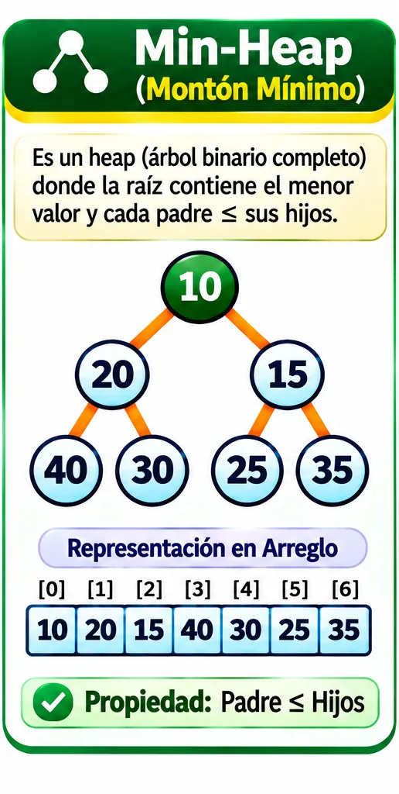
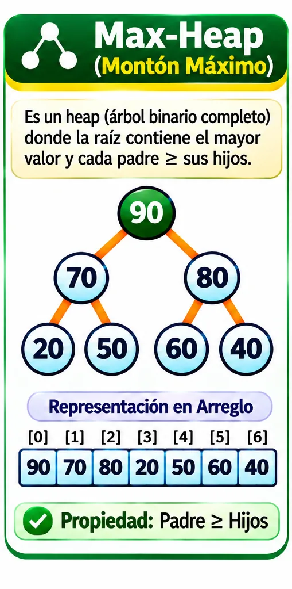
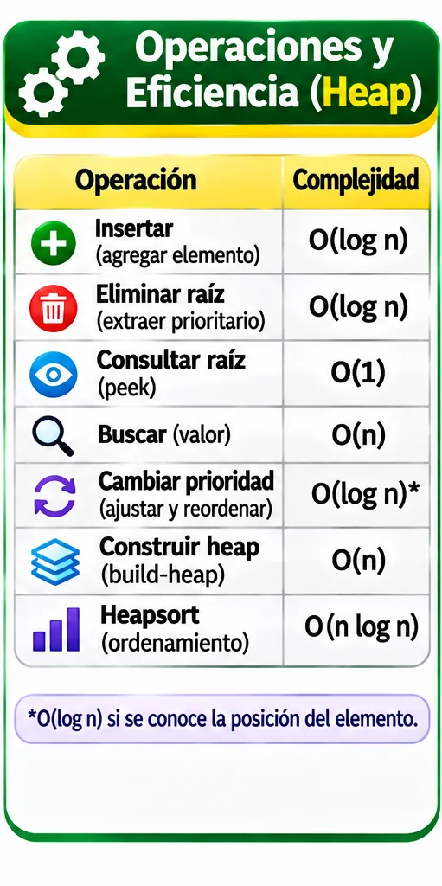

Duración: 6 horas.
5.1 · Definición
Una cola con prioridad es una estructura en la que cada elemento posee una prioridad asociada. A diferencia de una cola FIFO, el siguiente elemento que se atiende no necesariamente es el primero que llegó, sino el que tiene la prioridad más alta de acuerdo con el criterio definido.
Un montículo o heap es una estructura basada en un árbol binario completo que permite implementar eficientemente una cola con prioridad.
Cola con prioridad
Define el comportamiento: quién debe ser atendido primero.
Heap
Organiza eficientemente los elementos para encontrar rápidamente al prioritario.
No son lo mismo
La cola con prioridad es un tipo abstracto de dato; el heap es una implementación común.
5.1.1 · Implementación y aplicaciones de las colas con prioridad
En una cola FIFO tradicional, el criterio de salida es el orden de llegada . En una cola con prioridad, el criterio cambia: el sistema selecciona al elemento con la prioridad más importante.
| Característica | Cola FIFO | Cola con prioridad |
|---|---|---|
| Orden de atención | Orden de llegada | Según prioridad |
| Primer elemento | El más antiguo | El de mayor prioridad |
| Operación principal | Desencolar | Extraer prioritario |
| Ejemplo | Fila de impresión | Atención de urgencias |
ALGORITMO ExtraerPrioritario(cola)
SI cola está vacía
RETORNAR ERROR
FIN SI
prioritario ← elemento con mayor prioridad
ELIMINAR prioritario
RETORNAR prioritario
FIN ALGORITMO

Simulador animado · Cola con prioridad
Cada elemento tiene un valor y una prioridad . En este simulador, un número de prioridad mayor significa que debe atenderse antes. Si dos elementos tienen la misma prioridad, se conserva el orden de llegada.
5.1.2 · Montones (Heaps)
Un heap binario debe cumplir simultáneamente dos propiedades:
Propiedad estructural
Es un árbol binario completo; el último nivel se ocupa de izquierda a derecha.
Min-Heap
El menor valor está en la raíz y cada padre es menor o igual que sus hijos.
Max-Heap
El mayor valor está en la raíz y cada padre es mayor o igual que sus hijos.



Representación gráfica y almacenamiento en un arreglo
Aunque conceptualmente un heap es un árbol, normalmente se almacena en un arreglo unidimensional . Gracias a que el árbol es completo, no es necesario guardar punteros hacia los hijos.
[10, 20, 15, 40, 30, 25, 35]
.
La posición en el arreglo comienza en el índice 0.
5.2 · Insertar un elemento · Heapify Up
El nuevo valor se coloca al final para conservar la forma de árbol completo. Después se compara con su padre y sube mientras viole la propiedad del heap.
ALGORITMO InsertarMinHeap(heap, valor)
AGREGAR valor AL FINAL DE heap
i ← ÚLTIMO_INDICE(heap)
MIENTRAS i > 0
padre ← (i - 1) / 2
SI heap[padre] <= heap[i]
TERMINAR
FIN SI
INTERCAMBIAR heap[padre], heap[i]
i ← padre
FIN MIENTRAS
FIN ALGORITMO5.2 · Extraer la raíz · Heapify Down
La raíz representa el elemento prioritario. Después de extraerla, el último elemento del arreglo ocupa temporalmente la raíz y baja comparándose con sus hijos.
ALGORITMO ExtraerMinimo(heap)
minimo ← heap[0]
heap[0] ← ULTIMO_ELEMENTO(heap)
ELIMINAR ULTIMO_ELEMENTO(heap)
i ← 0
MIENTRAS tenga al menos un hijo
hijo ← HIJO_MENOR(i)
SI heap[i] <= heap[hijo]
TERMINAR
FIN SI
INTERCAMBIAR heap[i], heap[hijo]
i ← hijo
FIN MIENTRAS
RETORNAR minimo
FIN ALGORITMOHeapify Up y Heapify Down recorren como máximo la altura del árbol, por lo que su costo es O(log n) .
Simulador animado · Montículo binario (Heap)
Inserta valores y observa cómo primero se agregan en la última posición del arreglo y después suben comparándose con su padre. Al extraer la raíz, el último elemento ocupa temporalmente su lugar y luego baja hasta recuperar la propiedad del heap.
Operaciones y grado de eficiencia

| Operación | ¿Qué realiza? | Complejidad |
|---|---|---|
| Insertar | Agrega y reordena | O(log n) |
| Consultar raíz | Obtiene el prioritario sin eliminar | O(1) |
| Extraer raíz | Elimina el prioritario y reordena | O(log n) |
| Buscar valor arbitrario | Recorre elementos | O(n) |
| Eliminar valor arbitrario | Busca, elimina y reordena | O(n) |
| Cambiar prioridad | Actualiza una posición conocida y reordena | O(log n) * |
| Build-Heap | Organiza un arreglo existente | O(n) |
| Heapsort | Ordena todos los elementos | O(n log n) |
* Si primero hay que buscar el elemento, el costo total puede llegar a O(n).
Aplicaciones en ciencias computacionales
Sistemas operativos
Selección de procesos según prioridad.
Redes
Priorización de paquetes y eventos.
Grafos
Dijkstra y Prim.
Simuladores
Eventos por instante o prioridad.
Compresión
Construcción de árboles de Huffman.
Ordenamiento
Algoritmo Heapsort.
Comparación con otras estructuras
| Estructura | Insertar | Obtener prioritario | Extraer prioritario |
|---|---|---|---|
| Arreglo sin ordenar | O(1)* | O(n) | O(n) |
| Arreglo ordenado | O(n) | O(1) | O(1) |
| Lista enlazada ordenada | O(n) | O(1) | O(1) |
| Heap binario | O(log n) | O(1) | O(log n) |
| Árbol AVL | O(log n) | O(log n) | O(log n) |
5.3 · Solución de problemas
Problema de aplicación · Solicitudes de soporte
Desarrollar un sistema que administre solicitudes de soporte técnico de un laboratorio. Cada solicitud contiene folio, descripción, prioridad y orden de llegada.
REGISTRO Solicitud
folio
descripcion
prioridad
ordenLlegada
FIN REGISTRO
ALGORITMO AtenderSolicitud(heap)
SI heap está vacío
MOSTRAR "No hay solicitudes pendientes"
SINO
solicitud ← ExtraerRaiz(heap)
MOSTRAR solicitud
FIN SI
FIN ALGORITMOPractica con los simuladores
En la página de recursos puedes observar lentamente una cola con prioridad y un Min-Heap o Max-Heap, cambiar la velocidad, pausar y avanzar paso a paso.
Una cola con prioridad decide quién debe atenderse primero. Un heap binario permite implementar esa decisión eficientemente. En un Min-Heap el mínimo está en la raíz; en un Max-Heap está el máximo. La inserción usa Heapify Up y la extracción usa Heapify Down .
Comprobación rápida · 5 preguntas
Selecciona una respuesta en cada pregunta y presiona Comprobar . El sistema marcará aciertos, errores y calculará tu calificación.